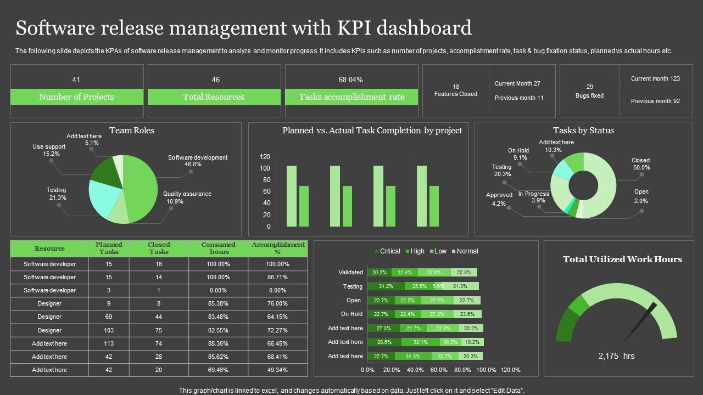
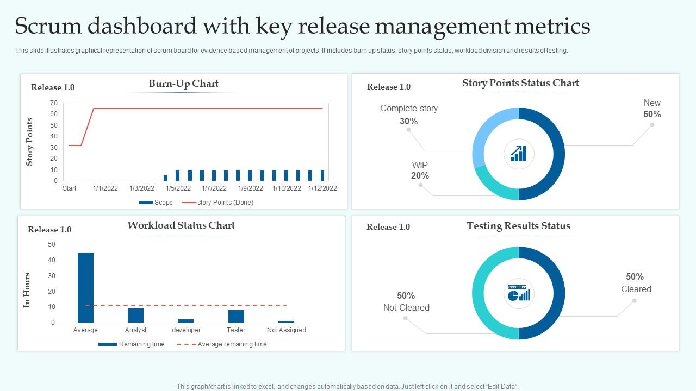

Clear insights, contextual explanations, and operational visibility for modern DevOps teams.
DevOps metrics provide measurable insight into how infrastructure, applications, and delivery pipelines behave in real-world environments. These indicators help teams evaluate reliability, performance, and operational efficiency using objective data.
This page is designed as an educational reference explaining commonly used DevOps metrics, dashboards, and automation patterns. The examples shown here are illustrative and are not intended to function as live monitoring or alerting systems.
Visualize your system and application metrics for better decisions.
Metrics provide objective insight into system behavior by capturing trends over time. Infrastructure indicators such as CPU, memory, and disk usage help identify capacity constraints, while application metrics expose performance bottlenecks and user-impacting issues.
In mature DevOps practices, these measurements are continuously reviewed to support proactive optimization, incident response, and long-term planning across environments.


Key performance indicators (KPIs) summarize the most important operational signals in a compact format. Defined thresholds help teams quickly identify abnormal conditions before they escalate into production incidents.
| Metric | Current Value | Threshold |
|---|---|---|
| CPU Usage | 45% | 80% |
| Memory Usage | 3.2 GB | 8 GB |
| Disk Space | 120 GB Free | 50 GB Free |
Operational metrics provide visibility into platform stability, delivery efficiency, and overall system health.
These metrics are widely referenced in DevOps and SRE frameworks to measure deployment confidence, failure rates, and recovery capabilities during service disruptions.
How often releases are deployed.
Percentage of deployments causing incidents.
Average time to restore service after failures.